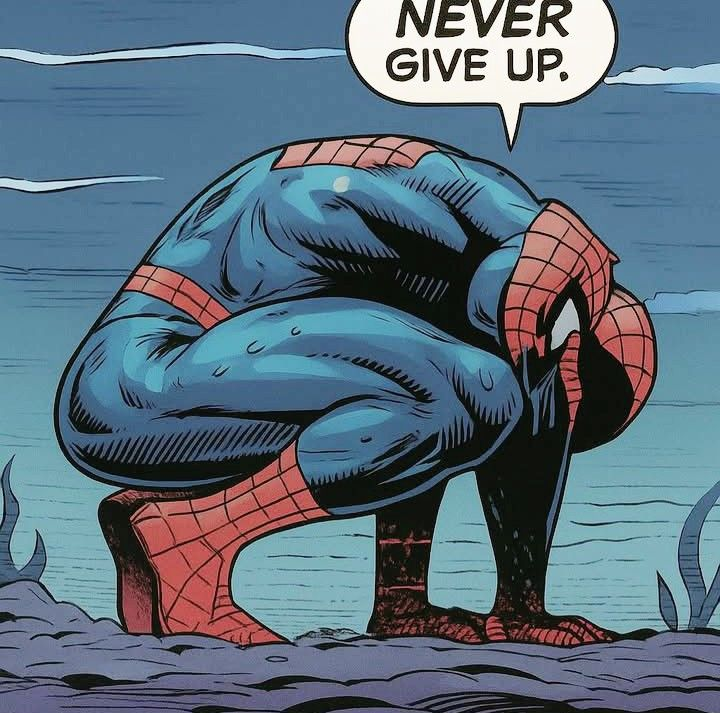

not a guide. not advice. just what actually happened and what i wish i knew — from someone who's almost made it to the other side.
you show up. you have a backpack that's a little too new. you've color-coded your schedule. you have a water bottle. you are ready.
week three, the color-coded schedule is in a drawer somewhere and you're eating cereal at 11pm trying to figure out if you can skip a lecture you've already skipped twice. the gap between "who you thought you were going to be in college" and "who you actually are in college" hits fast. and it hits quietly, which is the worst kind.
freshman year is the only time in your life you'll genuinely believe that going to bed at midnight is "staying up late." cherish it.
the social stuff is weird too. everyone's performing a version of themselves that's like 30% more confident than the real one, including you. everyone's pretending they have it figured out. no one has it figured out. this is fine. this is actually the most normal thing that will ever happen to you.
showing up to things even when you didn't feel like it. not the lectures — those matter too — but the random events, the small conversations, the people you met while doing nothing in particular. that's the actual education.
academically: you will bomb at least one exam you thought you'd ace. you will ace at least one you thought you'd bomb. the lesson here is that your gut is not a reliable predictor of performance, which is terrifying, but also kind of liberating once you accept it.
the sophomore slump is real. nobody warns you about it properly. they mention it like it's a minor inconvenience — a little dip, a bit of a blah period. it is not that. it is a full identity crisis disguised as a semester.
freshman year had the energy of novelty. everything was new, everything was a first. sophomore year is when the novelty runs out and you're left with just... the reality of it. the routine. the realization that you chose a major and now you have to actually study it for three more years. the first time you think "wait, what am i even doing here?"
the sophomore slump isn't about grades or friends or any one thing. it's about the gap between what you imagined college would be and what it actually is. and that gap is always bigger than expected.
this is also the year everyone's LinkedIn starts looking terrifying. internships, research positions, clubs they're "leading." you are eating instant noodles and rewatching a show for the third time. both can be true at the same time and both are valid. try to remember that.
but here's what sophomore year actually teaches you — and it does teach you, just slowly and painfully: you learn what you actually like versus what you thought you were supposed to like. you figure out which friendships are real. you start to have a more honest relationship with your own limits. that's not nothing. that's actually kind of everything.

i'm not there yet. next semester. but i've talked to enough people ahead of me to know the general shape of it, and also i've been in college long enough to have some guesses.
junior year is apparently when things get real in a different way. not the existential "who am i" kind of real from sophomore year. more like the "oh, the world is actually out there and it's actually coming" kind of real. internships. grad school. careers. the questions stop being abstract and start having deadlines attached to them.
everyone who's been through it says the same thing: junior year is when you stop surviving college and start actually using it. i'm choosing to believe them.
by junior year, most people around you will seem like they have a plan. a lot of them don't. the ones who do have a plan will change it. this is not a reassuring fact, but it is a true one.
what i'm actually going in with: lower expectations for how put-together i'll feel, higher expectations for what i can get done. two years of this taught me that the feeling of readiness never really comes. you just go anyway. that's the whole trick.
and yeah, part of me is nervous. but a bigger part is just — curious. which i think is the right energy to bring to a year that's going to be different no matter what.
honestly? i don't know if there's a clean one. i came in thinking college was a system you could figure out if you were smart enough or organized enough. it's not. it's more like a thing that happens to you while you're busy trying to figure it out.
freshman year teaches you that confidence and competence are not the same thing. sophomore year teaches you that comfort and growth are not the same thing. and junior year — i'll report back, but i'm guessing it teaches you that planning and doing are not the same thing.
the common thread: the thing you think is the thing usually isn't the thing. the real stuff sneaks in sideways. keep showing up anyway.